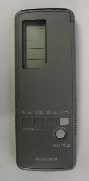
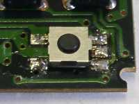
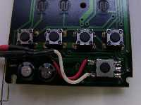
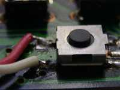
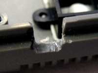
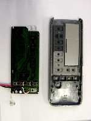
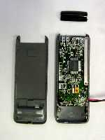
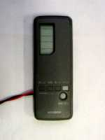
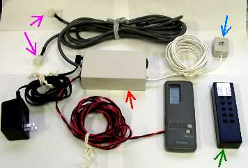

かならずお読みください→
エアコンのリモコン改造
環境制御装置（ECS）を用いて身の回りの家電製品を操作できるようにしたい，とのご希望を持つ方，また実際にやっておられる方はたくさんおられます．
しかし，エアコンだけはうまくいかない場合があるようです．
ネット上で探してみますと，「エアコンのリモコンが，他の家電製品のリモコンとは異なる赤外線信号を使っている」 とか 「学習リモコンの仕様が，エアコンのリモコン信号に適合していない」などの記載を見かけます．これらの真偽は私にはわかりません．
エアコンの操作が可能だと謳っている学習リモコンも製品として流通しているところをみると，すでにこの問題は，技術的には解決されていて，近い将来，そのような商品も現れるのかもしれません．しかし，２００２年春の段階で，現場的にはまだ解決されていません．
このページでご紹介するのは，このような問題の解決方法です．
まず背景を記します．伝の心を在宅でお使いの方が，家電製品の操作をご希望になりました．ご存じのように，伝の心には，クロッサム２＋（株式会社ハルコーポレーション）を用いた環境制御機能があります．早速，クロッサム２＋に学習の操作をしました．しかしテレビ，ビデオなどは問題なく学習できたのに，エアコンだけはうまくいきませんでした．環境制御装置を扱っておられる関西の会社の営業の方に相談したところ，エアコンのリモコンでは，この問題はよくあること．また，リモコンを分解し，回路から配線を取り出し，接点出力で操作できるように改造するのがよいことを教えていただきました．
初夏のことでした．「エアコンを是非自力で操作したい．失敗してリモコンを壊してしまってもいいから，トライしてくれ．」とのご本人のお許しを頂き，作業を開始しました．既に，ニッポンシューターのDCリレーボックスを電動ベッド操作のために導入していましたので，余っている接点信号を利用することにしました．
改造したのは，三菱電機製のリモコン（型名３Ｇ１９）です．運転状況，風量，温度など多くの操作が可能ですが，機能を絞り，ＯＮ／ＯＦＦのみ操作することを目標としました．
リモコンを分解し，基盤を見ると，ＯＮ／ＯＦＦの操作は，このスイッチで行っています．端子は５本見えますが，右の中央の端子は，スイッチのボディーを固定しているようです．残りの４本の組み合わせを試すと，左の２つの端子が，スイッチ押下で短絡し，またこれらの端子を短絡することで，エアコン本体が起動／停止することを確認しました．
配線したところです．表面実装のハンダ部分に余分な配線を割り込ませるわけですから，注意が必要です．基盤付近は，柔軟な線，リモコンケースから出る部分は丈夫な線を使いました．このリモコンの場合，部品の配置を考慮し，配線を左からとり出すことにしました．
配線取り出し口は，ケースをヤスリで凹状に切り欠きました．ケース組み立て時に配線を十分な力で挟み込めるように，切り欠きの大きさをむやみに大きくしない方がよろしいでしょう．もし介護者などが配線を足に引っかけても，基盤にダメージが及ばないよう配慮が必要です．
写真は，基盤とケース表，ケース表に基盤を組み込んだところとケース裏，完成 です．

この配線を，ＤＣリレーボックスにつなぎます．
この改造の結果，エアコンのリモコンを自由に持ち歩くことはできなくなりました．しかし，家族の方が操作するときはリモコンのボタンを使えます．伝の心で使用するときは，伝の心→クロッサム２＋→赤外線→ＤＣリレーボックス→エアコンのリモコン→赤外線→エアコン本体，とかなり回り道をしますので，若干の時間遅れを感じます．しかしエアコンではそれほど気になりませんでした．
改造作業には，その途中で何度か確認のための試運転が必要です．リモコンの場合，動作が目視できないため，実際に対象の機器を動かして見ることになります．ラジカセや小型のテレビなら，一式をお借りして作業場で仕事ができますが，エアコンではそうはいきません．ここでご紹介した作業も，訪問先のお宅で，ベッド脇で行いました．限られた時間で，決定打を出す仕事は，プレッシャーがかかります．ですから，工具や部品の準備が大切です．また失敗したときに，リモコンのみで追加購入可能か確認することも大切です．
今回，説明した道具の一式です．
中央の赤矢印がＤＣリレーボックスです． この製品は本来，赤外線リモコンで電動ベッドを操作するための製品です．（ご注意：現在この方法で操作できる電動ベッドはほとんど生産中止になっています．よって特定の電動ベッドコネクター付きＤＣリレーボックスも製造できません．2005年2月10日追記）右下の緑矢印のリモコン（学習リモコンへの教示用）から送信された赤外線信号を，右上の青矢印の受光部で受け，１０個のリレーを動作させます．左上のピンク矢印は，ベッドの有線リモコンと，ベッド本体へのコネクタです．ベッド操作には，６個のリレーを使用しますが，残りのリレーのうち１個を今回，エアコン操作に使いました．
05/02/10 ＤＣリレーボックスで操作可能な電動ベッドがほとんどなくなったことに関する注意事項を追記
03/05/15 公開
研究企画課リハ工学科にもどる